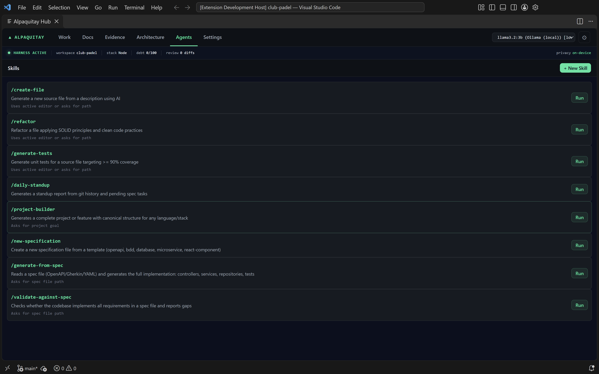
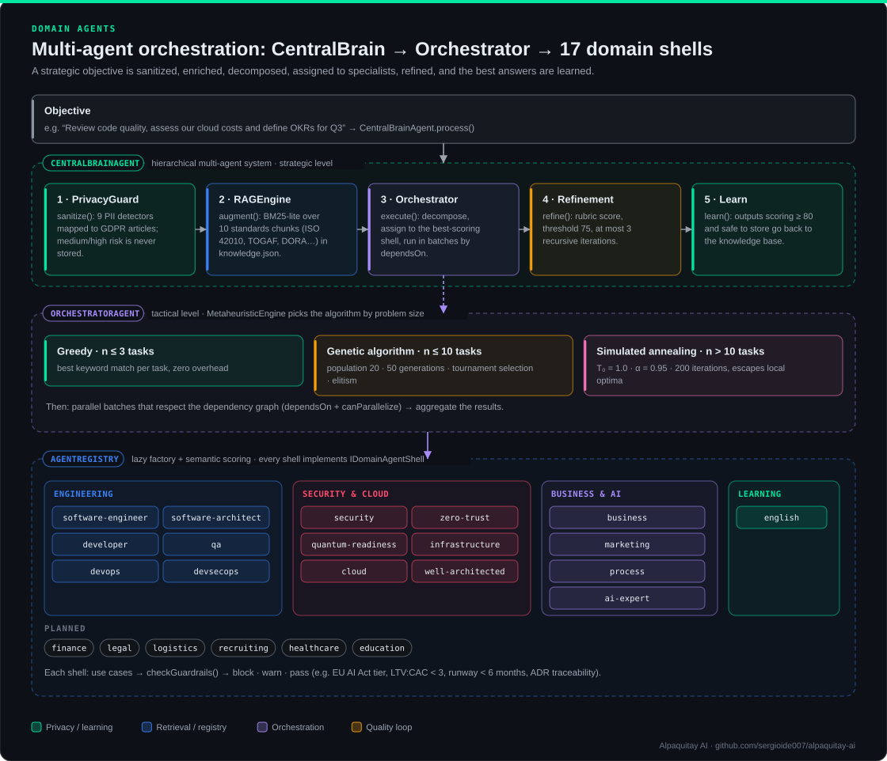

Chapter 09
Agents: skills and specialists
Alpaquitay has two kinds of agents: skills, concrete jobs you launch yourself, and domain specialists, to which the harness sends expert questions.


Built-in skills
Launch them from the Work chat with the /skill button, or from the Agents tab.
| Skill | What it does |
|---|---|
| Create File | Generates a new file from a description. |
| Refactor Code | Applies SOLID principles and clean code to the active file. |
| Generate Tests | Writes unit tests for the active file. |
| Generate from Spec | Reads a spec, plans the files and generates them all. |
| Validate vs Spec | Checks that the implementation complies with the spec. |
| New Specification | Creates a new spec.md from a template. |
| Project Builder | Builds a complete project from a goal description, with the architecture of the chosen stack. |
| Daily Standup | Summarises recent work from the commits. |
Creating your own skills
In Agents → + New Skill, type a name, a description and the prompt. The skill appears in the list and in /skill.
If you code in TypeScript, you can add permanent skills to the extension (with access to the model and to the file and Git tools) and multi-step skills. The README explains how: Custom Skills.
Domain specialists
When your chat message mentions deployment, pipelines, Docker, Terraform, cloud (AWS, Azure, GCP), IaC, DORA, pentests, threats, STRIDE, SBOM, OWASP SAMM, FinOps, zero trust, runbooks or MLOps, the harness sends it to the Deep lane: it picks one registered specialist, proposes the route with its confidence and, once you confirm with si, makes a single call to that specialist. Before that, the text goes through the personal-data detector; afterwards, the result goes through that domain's guardrails.


Some requests and the specialist that handles them:
| You ask for… | Specialist |
|---|---|
| A STRIDE threat model, a secure CI/CD pipeline, an SBOM, an OWASP SAMM assessment | DevSecOps |
| Pentest planning, incident response, a risk register, a NIST CSF assessment | Security |
| DORA metrics, infrastructure as code, a runbook, a deployment plan, a CI/CD pipeline | DevOps |
| An ADR, a C4 diagram, a technology radar | Software architecture |
| Technical-debt, SOLID or complexity analysis | Software engineering |
| A test plan, coverage, a quality gate | QA |
| RAG architecture, prompt engineering, MLOps | AI expert |
| A FinOps review, operational excellence, AWS, Azure or GCP Well-Architected | Well-Architected |
| Microsegmentation, CISA zero-trust maturity, privileged access, identity | Zero Trust |
| A cryptographic inventory (CBOM), post-quantum migration, crypto agility, the harvest-now-decrypt-later threat | Quantum readiness |
There are 17 registered specialists in all, each anchored to its reference standards:
| Specialist | Standards and frameworks |
|---|---|
| English (learning) | CEFR · ISO 17024 · ISO 21001 |
| Software engineering | ISO/IEC 25010 · 12207 · SOLID |
| Software architecture | ISO/IEC 42010 · TOGAF · C4 |
| Development | ISO/IEC 12207 · Clean Code |
| QA | ISO/IEC 29119 · IEEE 829 |
| DevOps | DORA · ISO/IEC 27001 |
| DevSecOps | OWASP SAMM · ISO/IEC 27001 |
| Security | NIST CSF · ISO/IEC 27001/27005 |
| Infrastructure | ISO/IEC 27001 · ITIL v4 |
| Cloud (AWS/Azure/GCP) | AWS WAF · ISO/IEC 27017 |
| Marketing | ISO 9001 · IAB |
| Process | ISO 9001 · BPM CBOK · Six Sigma |
| AI expert | ISO/IEC 42001 · EU AI Act · NIST AI RMF |
| Business | ISO 56002 · OKR · Business Model Canvas |
| Quantum readiness | cryptographic inventory, PQC |
| Well-Architected | Well-Architected pillars |
| Zero Trust | zero-trust maturity model |
Every specialist follows a hexagonal architecture (ports and adapters), with a pure domain model and its guardrails: